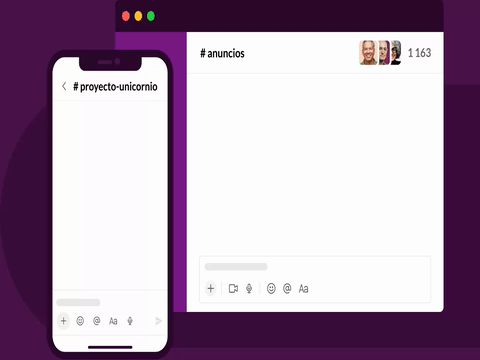

Un buen trabajo en equipo comienza con una sede digital
Reunir a todos tus compañeros, herramientas y comunicación en un mismo lugar te permitirá trabajar de manera más rápida y eficiente que nunca.



Reunir a todos tus compañeros, herramientas y comunicación en un mismo lugar te permitirá trabajar de manera más rápida y eficiente que nunca.

Los canales son el corazón de Slack. Son espacios organizados para todo el mundo que contienen todo lo necesario para trabajar. Los canales permiten conectarse entre departamentos, oficinas, zonas horarias e incluso con otras empresas.
Slack te otorga flexibilidad para trabajar cuando, donde y como tú quieras. Puedes chatear, enviar clips de audio y vídeo o unirte a una junta para discutir asuntos en directo.
Conectar tus otras aplicaciones de trabajo con Slack te permite ahorrar tiempo al no tener que cambiar entre pestañas. Además, con herramientas efícaces como el Creador de flujos de trabajo, puedes automatizar tareas rutinarias.
Slack se adapta de forma segura para garantizar la colaboración en las empresas más importantes del mundo.
de usuarios afirma que Slack ha mejorado la comunicación*
creen que su capacidad para trabajar a distancia ha mejorado*
se sienten más conectados con sus equipos*
"Hemos podido crear una amplia red virtual de empleados que se pueden comunicar como si estuvieran juntos. Hubo bastantes problemas sobre dónde trabájabamos,pero no sobre el cómo."
Mark smith*Promedio ponderado. Basado en una encuesta de 2707 respuestas de usuarios semanales de Slack en Estados Unidos,Reino Unido,Australia y Canadá, con un margen de error de ± 2 % al 95 % CI (diciembre de 2021).